פשוט להצליח במתמטיקה › כל הנושאים › כיתה ט׳
מתמטיקה לכיתה ט׳ – סרטוני הסבר לפי נושא
כל סרטוני ההסבר במתמטיקה לכיתה ט׳ – 117 סרטונים לפי הנושאים בתוכנית הלימודים: חזקות, אלגברה ופירוק לגורמים, פרבולה ופונקציה ריבועית, מערכות משוואות, בעיות מילוליות ותנועה, בעיות קיצון, משולש ישר-זווית ופיתגורס, טריגונומטריה במשולש ישר-זווית ועוד. מתאים לתרגול לקראת מבחנים ולחזרה על החומר.
- חזקות
- אלגברה ופירוק לגורמים
- פרבולה ופונקציה ריבועית
- מערכות משוואות
- בעיות מילוליות ותנועה
- בעיות קיצון
- משולש ישר-זווית ופיתגורס
- טריגונומטריה במשולש ישר-זווית
- דמיון משולשים ותאלס
- מרובעים וקטע אמצעים
- הסתברות
חזקות (10) לכל הסרטונים בנושא ←
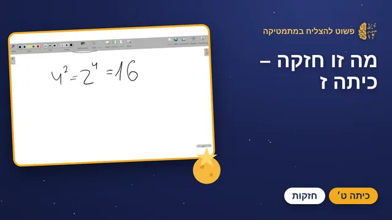
מה זו חזקה – כיתה ז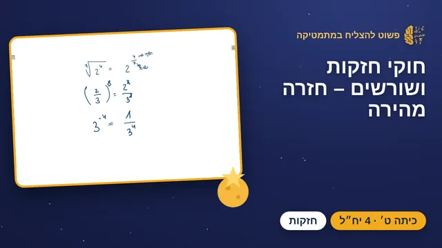
חוקי חזקות ושורשים – חזרה מהירה חוקי חזקות כיתה ט 2
חוקי חזקות כיתה ט 2 חוקי חזקות כיתה ט 3
חוקי חזקות כיתה ט 3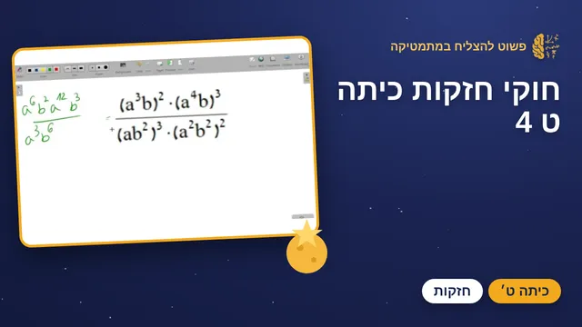
חוקי חזקות כיתה ט 4 חוקי חזקות כיתה ט 1
חוקי חזקות כיתה ט 1 חוקי חזקות כיתה ט – בסיסי, מרשים והבנה חשובה
חוקי חזקות כיתה ט – בסיסי, מרשים והבנה חשובה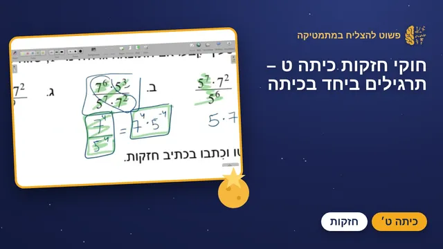
חוקי חזקות כיתה ט – תרגילים ביחד בכיתה חוקי חזקות כיתה ט – בסיסי ומרשים (2)
חוקי חזקות כיתה ט – בסיסי ומרשים (2) תרגיל בפירוק חזקות – איך לאחד ולחלק שברים עם מעריכים
תרגיל בפירוק חזקות – איך לאחד ולחלק שברים עם מעריכיםאלגברה ופירוק לגורמים (16) לכל הסרטונים בנושא ←
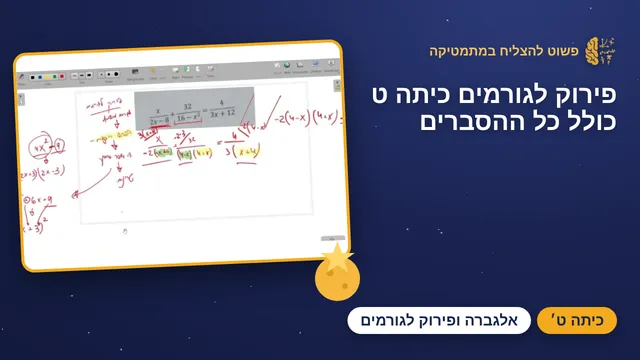
פירוק לגורמים כיתה ט כולל כל ההסברים כפל מקוצר כיתה ט
כפל מקוצר כיתה ט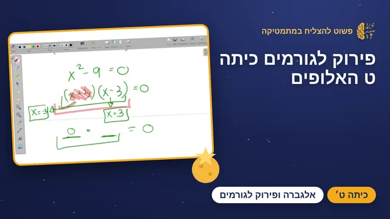
פירוק לגורמים כיתה ט האלופים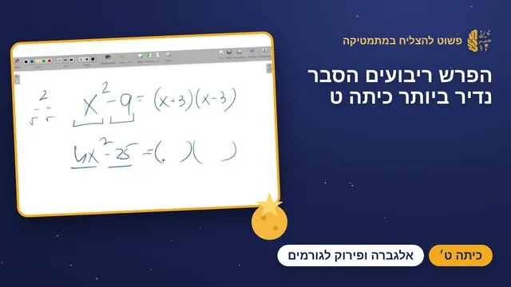
הפרש ריבועים הסבר נדיר ביותר כיתה ט גורם משותף – מה זה אומר ואיך עושים את זה כיתה ט
גורם משותף – מה זה אומר ואיך עושים את זה כיתה ט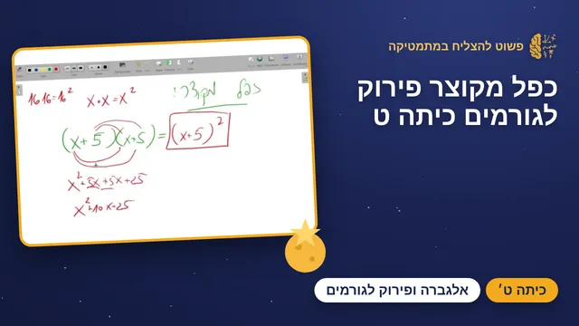
כפל מקוצר פירוק לגורמים כיתה ט הפרש ריבועים תרגול
הפרש ריבועים תרגול פתירת משוואות בעזרת פירוק לגורמים כיתה ט
פתירת משוואות בעזרת פירוק לגורמים כיתה ט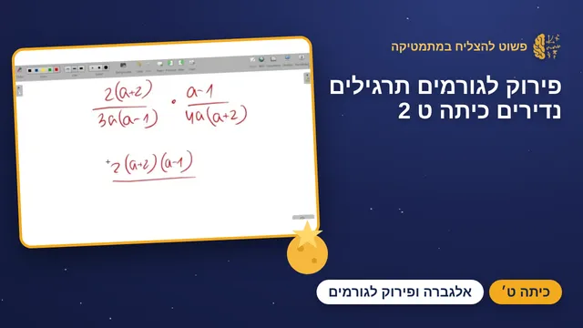
פירוק לגורמים תרגילים נדירים כיתה ט 2 פירוק לגורמים תרגילים נדירים כיתה ט 1
פירוק לגורמים תרגילים נדירים כיתה ט 1 פירוק לגורמים תרגילים נדירים כיתה ט 3
פירוק לגורמים תרגילים נדירים כיתה ט 3 פירוק לגורמים – גורם משותף, דו-איבר בריבוע, הפרש ריבועים וטרינום
פירוק לגורמים – גורם משותף, דו-איבר בריבוע, הפרש ריבועים וטרינום פירוק לגורמים תרגילים נדירים 5 יח
פירוק לגורמים תרגילים נדירים 5 יח פירוק לגורמים כיתה ט מדהים מקסים ומהמםהפרש ריבועים כיתה ט הקבצה א – פירוק לגורמים
פירוק לגורמים כיתה ט מדהים מקסים ומהמםהפרש ריבועים כיתה ט הקבצה א – פירוק לגורמים לפתור משוואה עם פירוק לגורמים ומכנה משותף כיתה ט כולל תחום הגדרה
לפתור משוואה עם פירוק לגורמים ומכנה משותף כיתה ט כולל תחום הגדרהפרבולה ופונקציה ריבועית (17) לכל הסרטונים בנושא ←
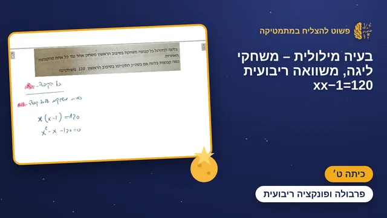
בעיה מילולית – משחקי ליגה, משוואה ריבועית xx−1=120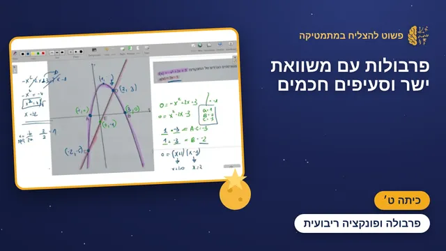
פרבולות עם משוואת ישר וסעיפים חכמים פרבולה עם מלא סעיפים חכמים
פרבולה עם מלא סעיפים חכמים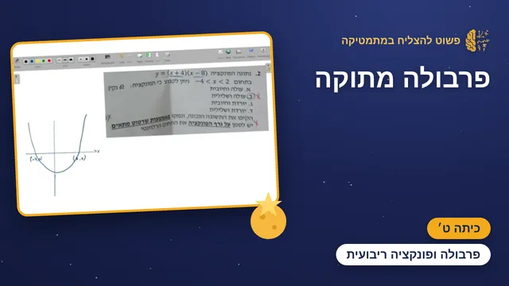
פרבולה מתוקה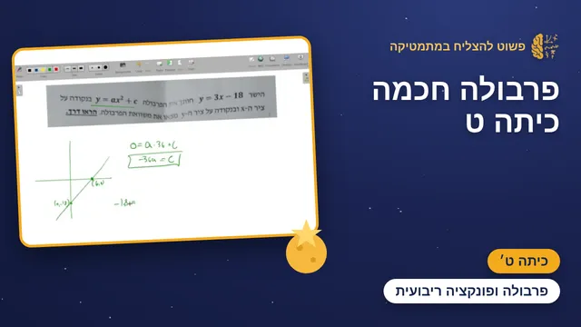
פרבולה חכמה כיתה ט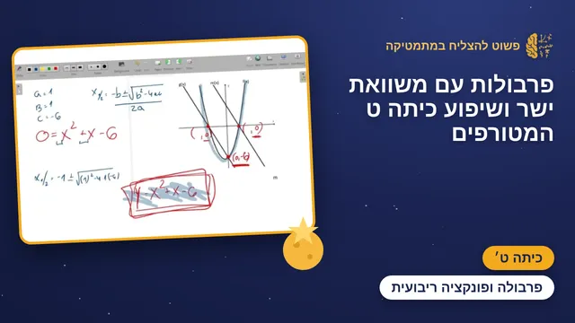
פרבולות עם משוואת ישר ושיפוע כיתה ט המטורפים פרבולה הבסיס של הבסיס כיתה ט
פרבולה הבסיס של הבסיס כיתה ט ציר סימטריה פרבולה מדהימה ויפה כיתה ט
ציר סימטריה פרבולה מדהימה ויפה כיתה ט פרבולה כיתה ט נדיר ומדהים
פרבולה כיתה ט נדיר ומדהים חקירה מלאה פונקציה ריבועית
חקירה מלאה פונקציה ריבועית חקירת פונקציה ריבועית מדהימה כיתה ט 5 יח
חקירת פונקציה ריבועית מדהימה כיתה ט 5 יח פונקציה ריבועית – הסבר על המהות, ציר הסימטריה ונוסחת השורשים כיתה ט 5 יח
פונקציה ריבועית – הסבר על המהות, ציר הסימטריה ונוסחת השורשים כיתה ט 5 יח נוסחת השורשים כיתה ט 5 יח
נוסחת השורשים כיתה ט 5 יח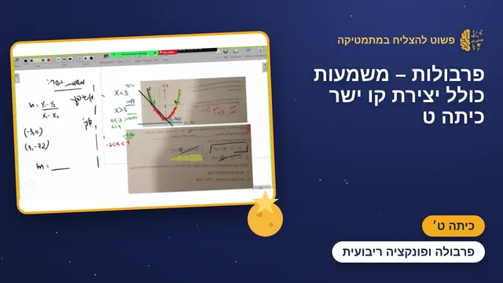
פרבולות – משמעות כולל יצירת קו ישר כיתה ט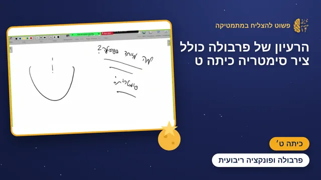
הרעיון של פרבולה כולל ציר סימטריה כיתה ט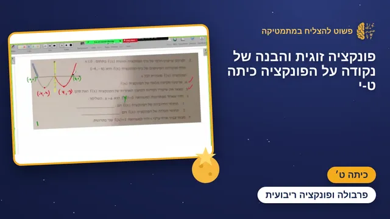
פונקציה זוגית והבנה של נקודה על הפונקציה כיתה ט-י תרגיל פרבולה עם קו ישר וישר המאונך לו – פתרון מלא
תרגיל פרבולה עם קו ישר וישר המאונך לו – פתרון מלאמערכות משוואות (4) לכל הסרטונים בנושא ←
 מערכת משוואות עם שברים 30∕x+1=30∕y – הצבה למשוואה ריבועית
מערכת משוואות עם שברים 30∕x+1=30∕y – הצבה למשוואה ריבועית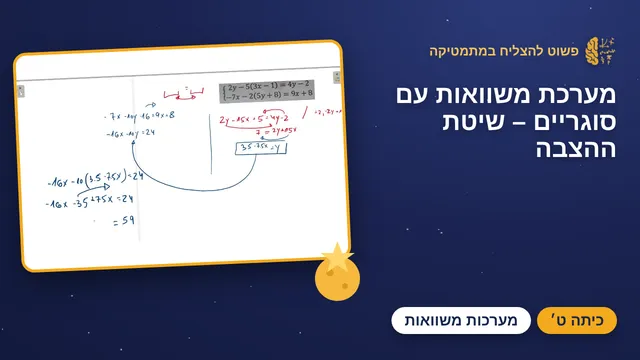
מערכת משוואות עם סוגריים – שיטת ההצבה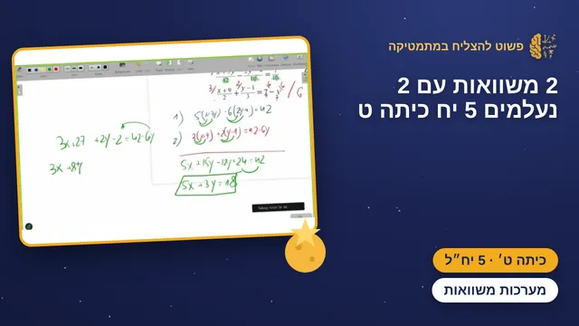
2 משוואות עם 2 נעלמים 5 יח כיתה ט הסבר מערכת משוואות עם 2 נעלמים תחילת כיתה ט
הסבר מערכת משוואות עם 2 נעלמים תחילת כיתה טבעיות מילוליות ותנועה (13) לכל הסרטונים בנושא ←
 בעיות מילוליות כיתה ט הטופ של הטופ 8
בעיות מילוליות כיתה ט הטופ של הטופ 8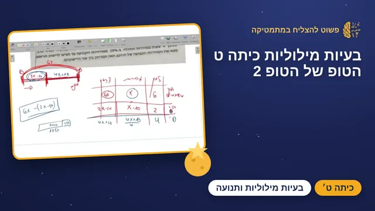
בעיות מילוליות כיתה ט הטופ של הטופ 2בעיות מילוליות כיתה ט הטופ של הטופ 6 בעיות מילוליות כיתה ט הטופ של הטופ 5
בעיות מילוליות כיתה ט הטופ של הטופ 5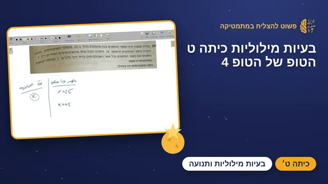
בעיות מילוליות כיתה ט הטופ של הטופ 4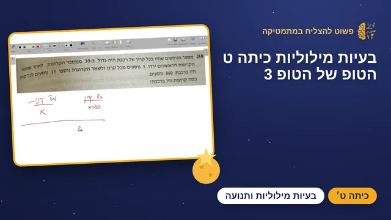
בעיות מילוליות כיתה ט הטופ של הטופ 3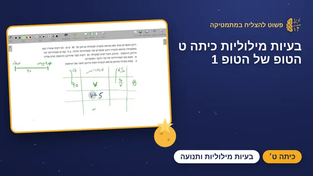
בעיות מילוליות כיתה ט הטופ של הטופ 1 בעיות מילוליות כיתה ט 2
בעיות מילוליות כיתה ט 2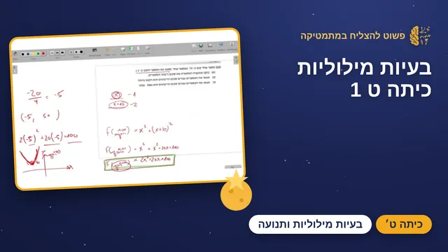
בעיות מילוליות כיתה ט 1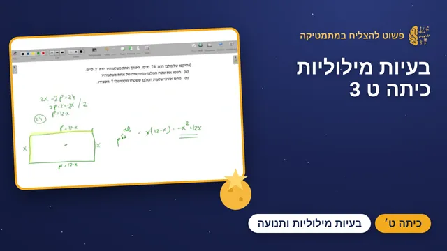
בעיות מילוליות כיתה ט 3 בעיית תנועה כיתה טתרגיל סיפור – להעביר למשוואות עם 2 נעלמים
בעיית תנועה כיתה טתרגיל סיפור – להעביר למשוואות עם 2 נעלמים להפוך תרגיל מילולי למשוואה עם אחוזים – נעלם אחד
להפוך תרגיל מילולי למשוואה עם אחוזים – נעלם אחדבעיות קיצון (1) לכל הסרטונים בנושא ←

משולש ישר-זווית ופיתגורס (6) לכל הסרטונים בנושא ←
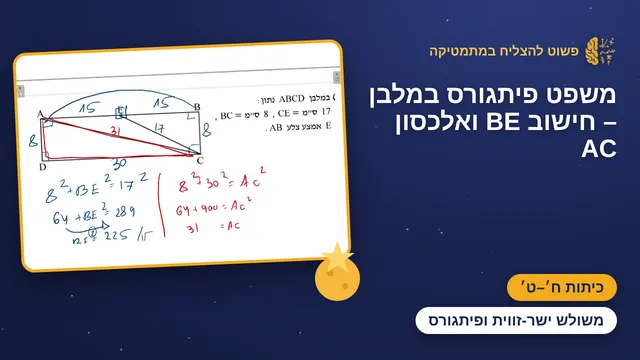
משפט פיתגורס במלבן – חישוב BE ואלכסון AC משולש ישר זווית תרגיל מדהים ומיוחד כיתה ט
משולש ישר זווית תרגיל מדהים ומיוחד כיתה ט תרגיל בגאומטריה עם ישר זווית ברמה הכי גבוהה כיתה ט עם ביטוי צלעות
תרגיל בגאומטריה עם ישר זווית ברמה הכי גבוהה כיתה ט עם ביטוי צלעות תרגיל מהמם בישר זווית כיתה ט
תרגיל מהמם בישר זווית כיתה ט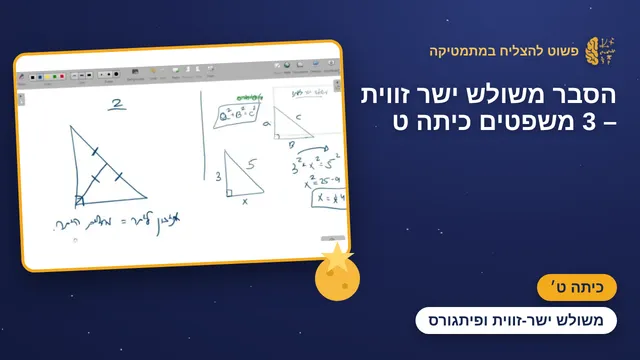
הסבר משולש ישר זווית – 3 משפטים כיתה ט משולש ישר זווית – משפטים בגאומטריה
משולש ישר זווית – משפטים בגאומטריהטריגונומטריה במשולש ישר-זווית (3) לכל הסרטונים בנושא ←
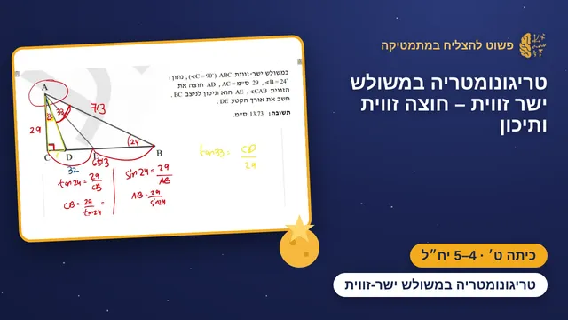
טריגונומטריה במשולש ישר זווית – חוצה זווית ותיכון טריגונומטריה במשולש ישר זווית – תיכון ליתר
טריגונומטריה במשולש ישר זווית – תיכון ליתר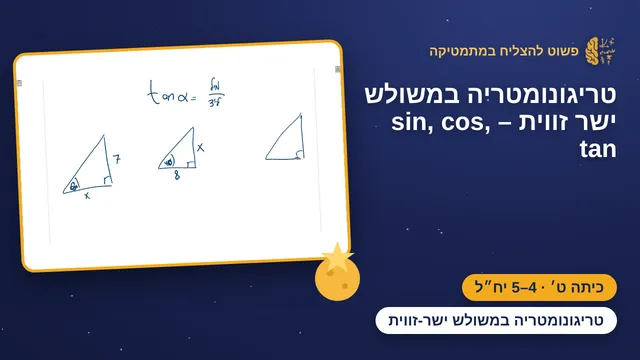
טריגונומטריה במשולש ישר זווית – sin, cos, tanדמיון משולשים ותאלס (7) לכל הסרטונים בנושא ←
 דמיון משולשים עם שטחים
דמיון משולשים עם שטחים דמיון משולשים – גובה ליתר במשולש ישר זווית ומשולש שווה שוקיים
דמיון משולשים – גובה ליתר במשולש ישר זווית ומשולש שווה שוקיים משפטים במעגל ומשולשים דומים – הסבר
משפטים במעגל ומשולשים דומים – הסבר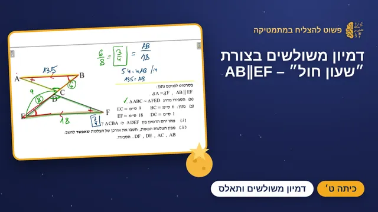
דמיון משולשים בצורת ״שעון חול״ – AB∥EF דמיון משולשים – הסבר ותרגילים בסיסיים
דמיון משולשים – הסבר ותרגילים בסיסיים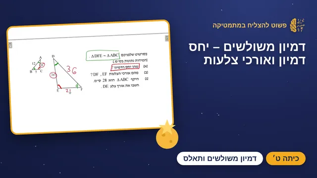
דמיון משולשים – יחס דמיון ואורכי צלעות מעוין עם ריבוע תרגיל מדהים 4 5 יח כיתה ט וי
מעוין עם ריבוע תרגיל מדהים 4 5 יח כיתה ט וימרובעים וקטע אמצעים (35) לכל הסרטונים בנושא ←
 קטע אמצעים במשולש – הסבר קצר
קטע אמצעים במשולש – הסבר קצר גאומטריה עם אנליטית כיתה ט
גאומטריה עם אנליטית כיתה ט גאומטריה כיתה ט כולל טענה נימוק
גאומטריה כיתה ט כולל טענה נימוק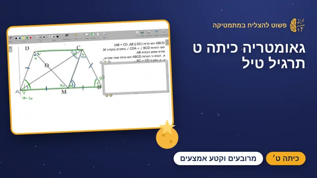
גאומטריה כיתה ט תרגיל טיל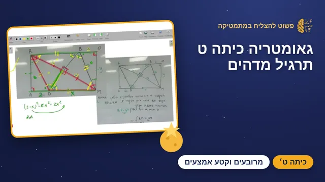
גאומטריה כיתה ט תרגיל מדהים גאומטריה כיתה ט מתוקה מאוד
גאומטריה כיתה ט מתוקה מאוד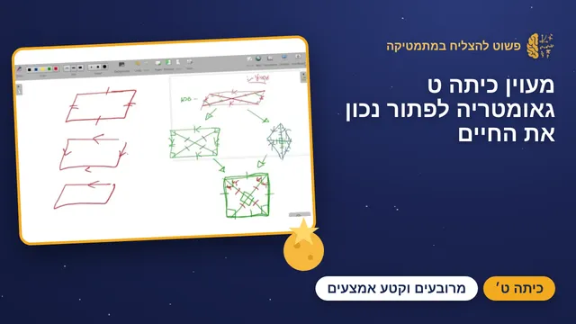
מעוין כיתה ט גאומטריה לפתור נכון את החיים מלבן כיתה ט גאומטריה
מלבן כיתה ט גאומטריה קטע אמצעים בטרפז תרגילים ל5 יח כיתה ט המטורפים 4
קטע אמצעים בטרפז תרגילים ל5 יח כיתה ט המטורפים 4 קטע אמצעים בטרפז תרגילים ל5 יח כיתה ט המטורפים 2
קטע אמצעים בטרפז תרגילים ל5 יח כיתה ט המטורפים 2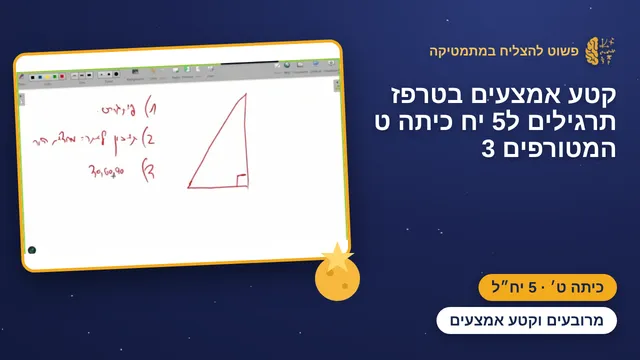
קטע אמצעים בטרפז תרגילים ל5 יח כיתה ט המטורפים 3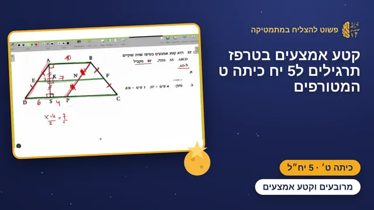
קטע אמצעים בטרפז תרגילים ל5 יח כיתה ט המטורפים תרגיל בגאומטריה כיתה ט ריבוע נדיר תרגיל מטורף
תרגיל בגאומטריה כיתה ט ריבוע נדיר תרגיל מטורף תרגילי גאומטריה מדהימים כיתה ט 5 יח 4
תרגילי גאומטריה מדהימים כיתה ט 5 יח 4 תרגילי גאומטריה מדהימים כיתה ט 5 יח 1
תרגילי גאומטריה מדהימים כיתה ט 5 יח 1 תרגילי גאומטריה מדהימים כיתה ט 5 יח 3
תרגילי גאומטריה מדהימים כיתה ט 5 יח 3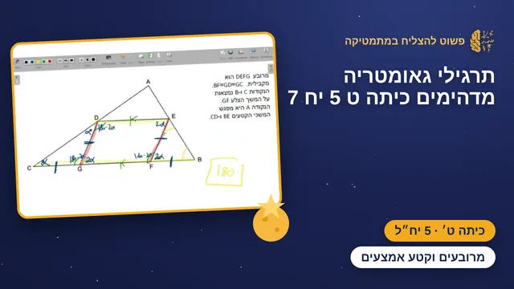
תרגילי גאומטריה מדהימים כיתה ט 5 יח 7 תרגילי גאומטריה מדהימים כיתה ט 5 יח 2
תרגילי גאומטריה מדהימים כיתה ט 5 יח 2 תרגילי גאומטריה מדהימים כיתה ט 5 יח 6
תרגילי גאומטריה מדהימים כיתה ט 5 יח 6 תרגילי גאומטריה מדהימים כיתה ט 5 יח 5
תרגילי גאומטריה מדהימים כיתה ט 5 יח 5 תרגיל מקבילית ברמה גבוהה כיתה ט 5 יח
תרגיל מקבילית ברמה גבוהה כיתה ט 5 יח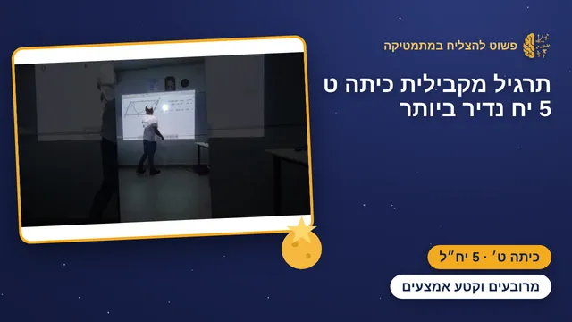
תרגיל מקבילית כיתה ט 5 יח נדיר ביותר הסבר על מהות מקבילית, תכונות ואיך מוכיחים כיתה ט 5 יח
הסבר על מהות מקבילית, תכונות ואיך מוכיחים כיתה ט 5 יח תרגיל בגאומטריה קטע אמצעים כיתה ט 5 יח
תרגיל בגאומטריה קטע אמצעים כיתה ט 5 יח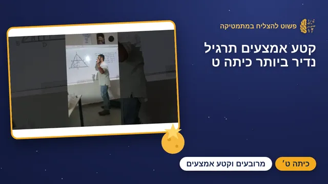
קטע אמצעים תרגיל נדיר ביותר כיתה ט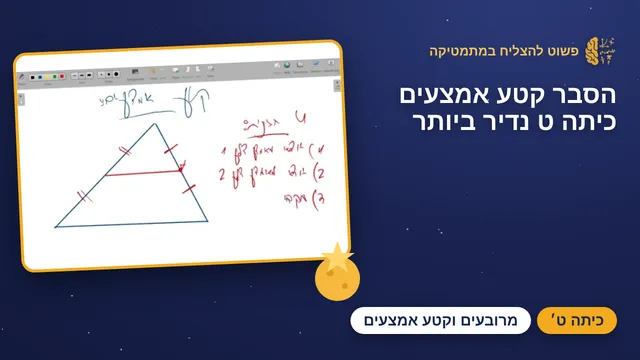
הסבר קטע אמצעים כיתה ט נדיר ביותר קטע אמצעים תרגיל וואו כיתה ט
קטע אמצעים תרגיל וואו כיתה ט תרגילי גאומטריה כיתה ט
תרגילי גאומטריה כיתה ט גאומטריה כיתה ט נדיר ביופיו 1
גאומטריה כיתה ט נדיר ביופיו 1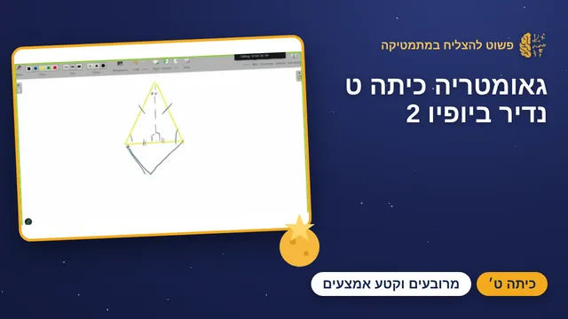
גאומטריה כיתה ט נדיר ביופיו 2 תרגיל גאומטריה – דלתון כיתה ט, כולל משולש שווה שוקיים
תרגיל גאומטריה – דלתון כיתה ט, כולל משולש שווה שוקיים תרגיל בגאומטריה כיתה ט 5 יח
תרגיל בגאומטריה כיתה ט 5 יח הסבר משפטי גאומטריה – כל הבסיס עד מרובעים כיתה ט
הסבר משפטי גאומטריה – כל הבסיס עד מרובעים כיתה ט גאומטריה – קטע אמצעיםגאומטריה – מקבילית
גאומטריה – קטע אמצעיםגאומטריה – מקבילית